L5 Elastic MapReduce Exercise
1、Create EMR
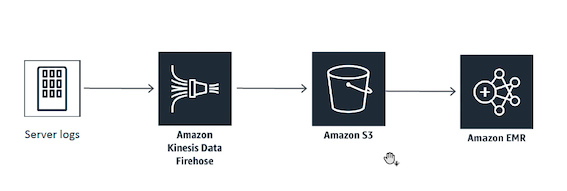
- Name: CadabraRecs
- Appliactions: Spark
- Instance type: C5
- Apache Spark doing machine learning and machine learning tends to be a very CPU heavy operation.
- Tensor flow cluster to use a GPU optimized cluster
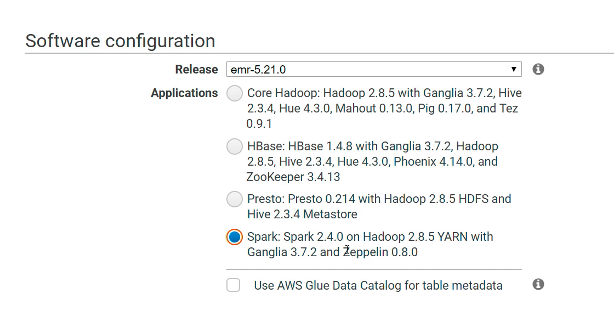
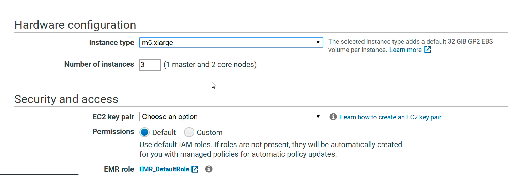
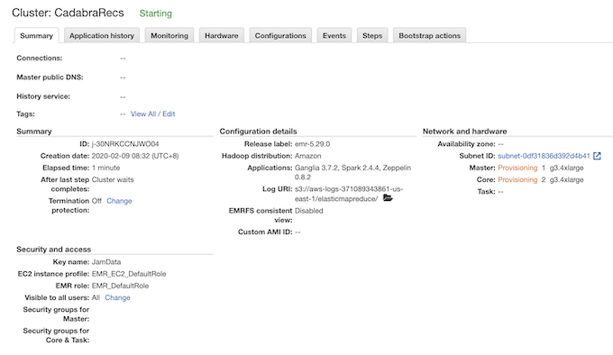
Change master node SG
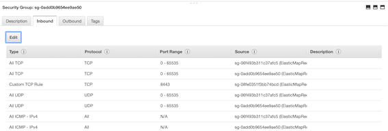
Add Port 22:
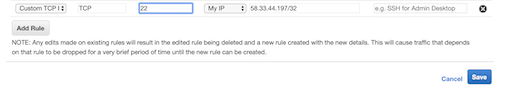
SSH Master public DNS
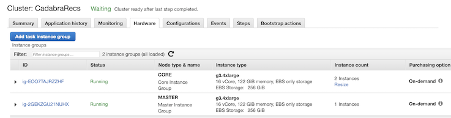
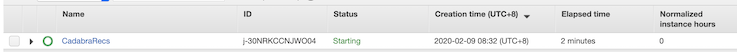
ssh -i Data.pem hadoop@ip-10-250-0-78.ec2.internal
2、Example: Using Algorithm called ALS alternating least squares
Under the samples directory of Spark itself.
$ cp /user/lib/spark/examples/src/main/python/als_example.py ./
$ ls
als_example.py
**2-1 als_example.py**
This is a python script that is a spark driver script it kicks off a Spark session, calls ALSExample
rom __future__ import print_function
import sys
if sys.version >= '3':
long = int
from pyspark.sql import SparkSession
# $example on$
from pyspark.ml.evaluation import RegressionEvaluator
from pyspark.ml.recommendation import ALS
from pyspark.sql import Row
# $example off$
if __name__ == "__main__":
spark = SparkSession\
.builder\
.appName("ALSExample")\
.getOrCreate()
# $example on$
lines = spark.read.text("data/mllib/als/sample_movielens_ratings.txt").rdd
parts = lines.map(lambda row: row.value.split("::"))
ratingsRDD = parts.map(lambda p: Row(userId=int(p[0]), movieId=int(p[1]),
rating=float(p[2]), timestamp=long(p[3])))
ratings = spark.createDataFrame(ratingsRDD)
(training, test) = ratings.randomSplit([0.8, 0.2])
# Build the recommendation model using ALS on the training data
# Note we set cold start strategy to 'drop' to ensure we don't get NaN evaluation metrics
als = ALS(maxIter=5, regParam=0.01, userCol="userId", itemCol="movieId", ratingCol="rating",
coldStartStrategy="drop")
model = als.fit(training)
# Evaluate the model by computing the RMSE on the test data
predictions = model.transform(test)
evaluator = RegressionEvaluator(metricName="rmse", labelCol="rating",
predictionCol="prediction")
rmse = evaluator.evaluate(predictions)
print("Root-mean-square error = " + str(rmse))
# Generate top 10 movie recommendations for each user
userRecs = model.recommendForAllUsers(10)
# Generate top 10 user recommendations for each movie
movieRecs = model.recommendForAllItems(10)
# Generate top 10 movie recommendations for a specified set of users
users = ratings.select(als.getUserCol()).distinct().limit(3)
userSubsetRecs = model.recommendForUserSubset(users, 10)
# Generate top 10 user recommendations for a specified set of movies
movies = ratings.select(als.getItemCol()).distinct().limit(3)
movieSubSetRecs = model.recommendForItemSubset(movies, 10)
# $example off$
userRecs.show()
movieRecs.show()
userSubsetRecs.show()
movieSubSetRecs.show()
spark.stop()
- Reads in data here from something called
sample_movielens_ratings.txtso by default it's using some movie ratings data.- Not work on S3, actually work in the HDFS file system on this cluster.
- Spark on EMR on top of a Hadoop cluster with HDFS file system
- Reading every line of that movie ratings data it's mapping it out to actually split that up based on individual fields it looks like
- It's delimited by double colon characters and then creates rows into an RDD by splitting out the user I.D., movie I.D., rating, and timestamp for each movie rating,
- Creates a data frame from that, splits that into a training, and test set and then it creates this ALS recommendation model
Goal: Generate top 10 user recommendations for a specified set of movies
2-2 Copy sample data into Hadoop's HDFS file system.
hadoop fs -mkdir -p /user/hadoop/data/mlib/als
- Created that directory in the HDFS file systems that's shared across this cluster.
hadoop fs -copyFromLocal /user/lib/hadoop/data/mlib/als/sample_movielens_ratings.txt /user/hadoop/data/mlib/als/sample_movielens_ratings.txt
- Copy from the local path and putting it into HDFS under the same place
spark-submit als_example.txt
- Distribute script across the entire cluster of three machines and that entire cluster will just start chewing on the data and building that recommendation model
2-3 Add error log output
$ sudo vim als_example.txt
spark.sparkContext.setLogLevel("Error")
$ spark-submit als_example.txt
2-4 Root mean square error
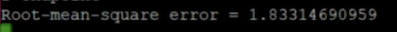
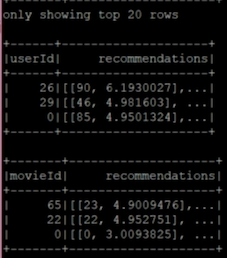
3、Customer Recommend Data
3-1 Make S3 data public (Only for Exercise)
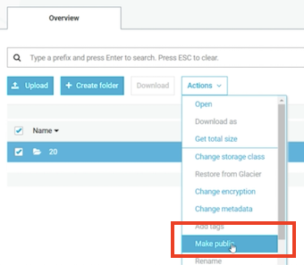
$ sudo vim als_example.txt
lines = spark.read.text("s3://kin-orderlogs/2020/02/09/20/*").rdd
parts = lines.map(lambda row: row.value.split(','))
#Filter out postage, shipping, bank charges, discounts, commissions
productsOnly = parts.filter(lambda p: p[1][0:5].isdigit())
#Filter out empty customer ID's
cleanData = productsOnly.filter(lambda p: p[6].isdigit())
ratingsRDD = cleanData.map(lambda p: Row(customerId=int(p[6]), \
itemId=int(p[1][0:5]), rating=1.0))
als = ALS(maxIter=5, regParam=0.01, userCol="customerId", itemCol="itemId", ratingCol="rating",
$ spark-submit als_example.txt
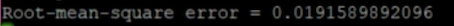
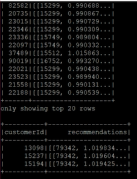